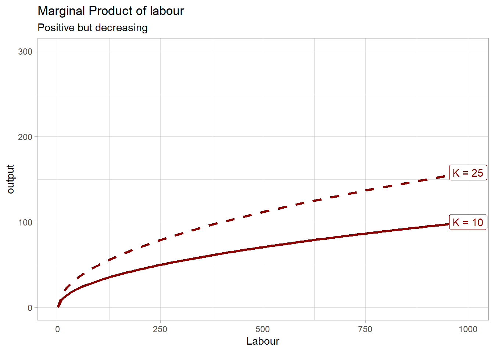
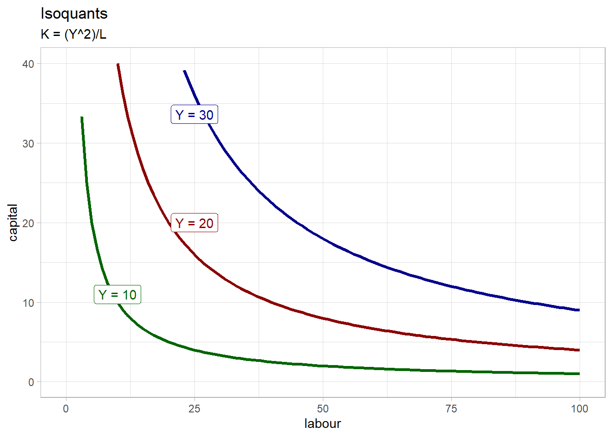
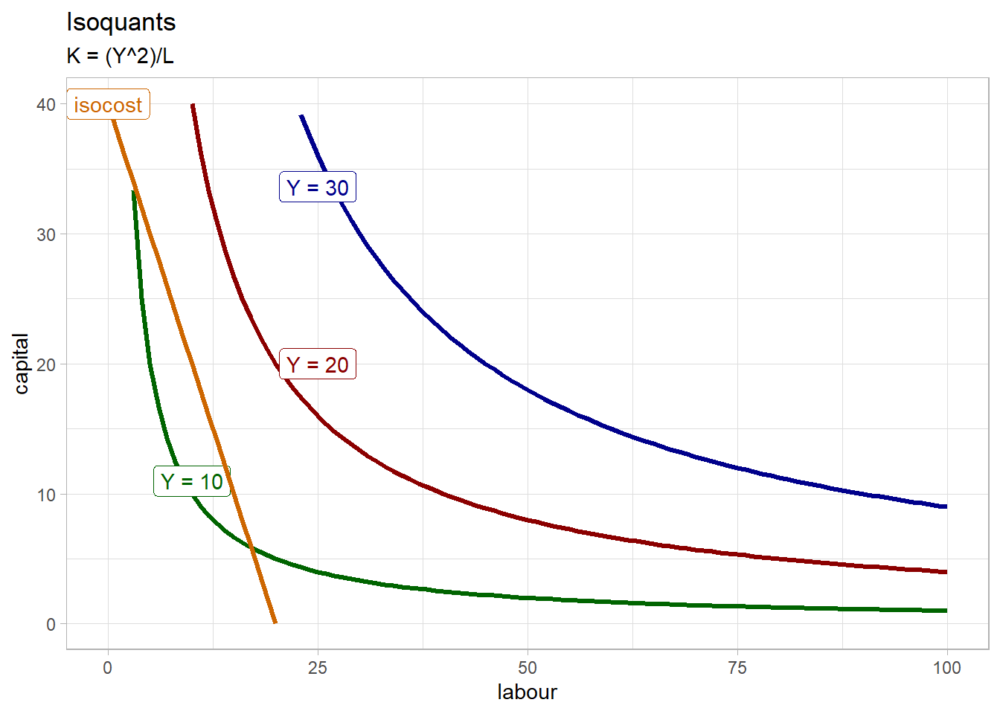
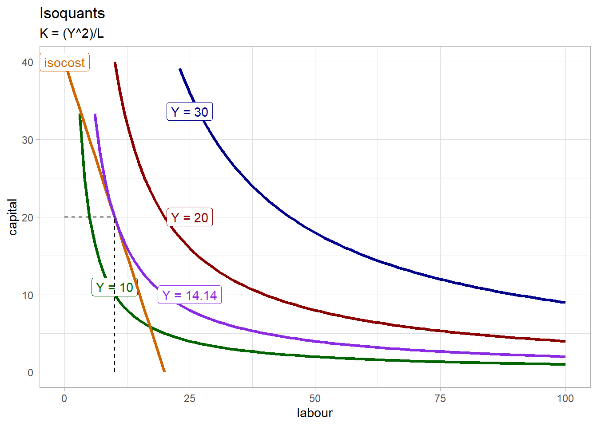
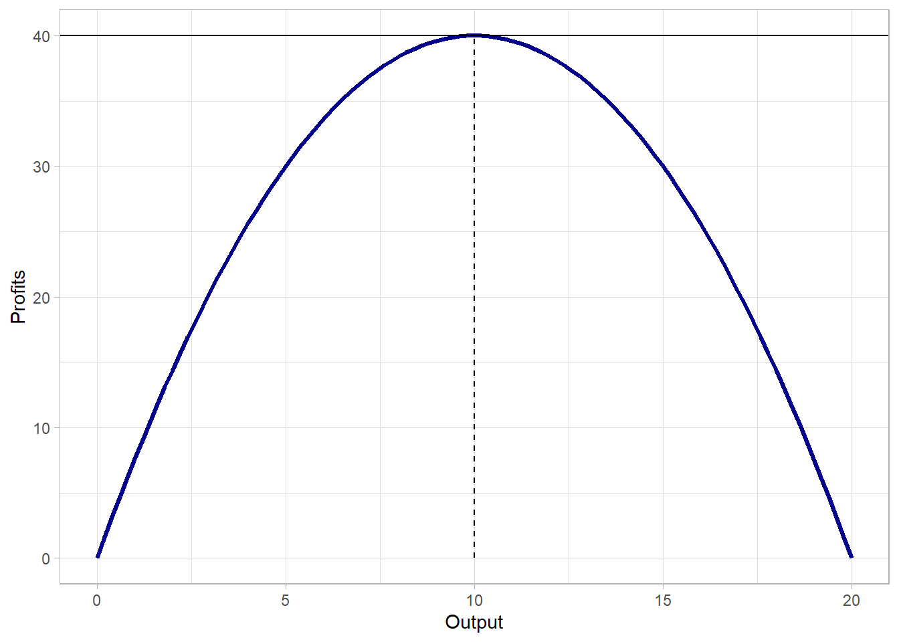

neo_prod_fun <- function(l, k) (l^(1/2)) * (k^(1/2))3 Mainstream/Neoclassical Production Theory
3.1 Intro
As I explained in the introduction, the most important element of mainstream neoclassical theory is the concept of market equilibrium under perfect competition. In the previous chapter, I gave a short summary on how mainstream economists derive the market equilibrium downwards slopping demand curve. Here, the objective is to understand how the other curve, the upward slopping supply curve, is derived. To understand why mainstream economics arrived to this result, one needs to understand mainstream production theory, which is the goal of this post.
As the previous chapter, what follows is mainly a summary of Acemoglu, Laibson, and List (2017) and Pindyck and Rubinfeld (2013), especially the parts on production.
3.2 How firms produce in neoclassical-mainstream theory
Neoclassical production theory has a very specific way to conceive production. In fact, the theory considers that production, how firms or productive units transform inputs (of labour, raw materials or other intermediary inputs/materials/services) into output (final goods or services produced), can be modeled as what is now famously known as the neoclassical production function. The latter is written as:
\(Y = F(K,L)\)
With Y the output, the quantity produced, K the quantity of capital used and L the quantity of labour employed. From now on, we will work with the following neoclassical production function as an example:
\(Y = K^{1/2}L^{1/2}\)
Here is how to write this function in R:
The neoclassical production function rests on important assumptions which illustrate how neoclassical theory conceive the production process:
Constant returns to scale
Constant returns to scale means that quantities produced increase proportionally with the quantity of inputs. For instance, if the quantities of inputs (capital and labour) are doubled, output will double.
Positive but diminishing marginal returns
Also called diminishing marginal products, or decreasing marginal productivity. This means that all factors of production (capital and labor) show positive but diminishing marginal returns: when we increase one of the inputs by one, with all the other inputs fixed, output will increase, but by less than the previous additional input. For example, the quantity of capital is often considered fixed in the short run, making labor the only variable input in the short run. Labor is assumed to have a decreasing marginal productivity (or marginal returns): with capital fixed, each time a firm employs an additional laborer, output will increase, but by less than when the previous additional laborer was employed. In our example, marginal product of labour is the first derivative with respect to labour:
Here is how to find the marginal productivity of labor function of our example in R:
MPL <- Deriv(neo_prod_fun, "l")
MPLfunction (l, k)
0.5 * (sqrt(k)/sqrt(l))If we fix the amount of capital to any value, 10 and 25 for instance, we can plot the marginal productivity of labour to better illustrate the principle of diminishing marginal returns:

Substitutability of factors/inputs
This third assumption implies that there is an infinite choice bewteen capital and labour for each level of output. For example, to produce 20 units of output, firms have an infinite choice to combine labour and capital. This is a strong assumption and as we will see the “rival” of the neoclassical production function is the Leontief production function, which is also called the “fixed-proportion” production function, because it assumes that for each level of output, there is only one possible combination of capital and labour.
Note that in the standard neoclassical production model makes the assumption that firm operate under perfect competition: perfect competition has three important characteristics:
Price taking
Since there are a lot of consumers and firms in the market, firms have not impact on the price, they cannot manipulate the latter. Price is thus exogenous and given.
Product homogeneity
The good produced in the market by the firms is the same, it is homogenous.
Free entry and exit
There are no special costs associated with the entry in the market for any potential firm nor costs associated with exit (a firm that would want to exit the market).
3.3 Short run and long run
Neoclassical production theory makes an important distinction between the short run and the long run, with direct implication on how to manipulate the production function:
Short run
We talk about short run when not all factors of production can be changed. Capital is typically considered as a fixed factor in the short run, whereas labour can still be changed. Thus, in the short run, capital is fixed and labour is variable.
Long run
We talk about long run when all factors can be changed. This is the amount of time needed to make all inputs variable.
3.4 Optimal choice of output, capital and labour
In neoclassical production theory, there is an optimal choice of output, capital and labour, which implies that there is an ideal size for a firm. This is a strong assessment, because this implies that each firm has an optimal size at which they grow and then stop growing once they reach this optimal size.
3.5 Isoquant and Isocost
Isoquants are a way to represent graphically any combination of labour and capital for any level of ouput. Capital is typically plotted on the y axis and labour on the x axis and output is fixed along each curve. If we go back to our production function curve \(Y = k^{0.5}L^{0.5}\), we have to isolate k to draw isoquants for this function, and then choose any value of output (Y):
\(K = \frac{Y^{2}}{L}\)

As in consumer theory, firms cannot choose any combination of capital and labour they want because, as consumers face a budget constraint, firms also face a constraint: their total cost. The isocost line, which shows all possible combinations of labour and capital that the firm can purchase with its current budget, hence total cost. Isocost is for the firm what the budget constraint line is to consumers.
The isocost function can be written as:
\(TC = wl +rK\)
With TC the total cost being equal to the wage (rate) w times labour L and r the rental cost of capital K. r includes the depreciation cost of capital and the lost interest rate (if the capital was invested somewhere else).
Isocost can then be rearranged to:
\(K = TC/r - (w/r)/L\)
For example, let’s say that the total cost over rental cost of capital (TC/r) is equal to 40 and the wage rate - rental rate is equal to 2 (w/r = 2). The function becomes \(K = 10 - 2L\)
isocost <- function(l) 40 - 2*l
The steps to derive the optimal choice of output, capital and labor is the same than for consumer theory: here the slope of the isoquant is called the marginal rate of technical substitution (MRTS). Setting the latter equal to the slope of the isocost, which is w/r (1 in our example) and solving for K, Y and L. In our example, the equilibrium level of output is 14.14, with K = 20 and L = 10.

3.6 Profit equation and profit maximisation
The neoclassical production function we saw above is not only important because it models how neoclassical firms produce, but also because it is part of the profit equation that firms want to maximize (in neoclassical theory, firms maximize their profits as consumers maximize their utility). The profit equation is written as:
\(\pi = PQ - TC\)
or more generally
\(\pi(q) = R(q) - TC(q)\)
With \(\pi\) the profits of the firm, \(PQ\) the price P multiplied by the quantity produced Q, minus the total cost TC. We saw above that total cost was equal to \(TC = wL -rK\), but micro manuals sometimes simplify this by just stating that total cost is equal to variable cost and fixed cost (in the short run, because in the long run all factors are variable).
Two important concepts are linked to this profit equation: marginal revenue and marginal cost.
Marginal revenue is the change in revenue resulting from from a one-unit increase in output.
Marginal cost is the change in cost associated with a one-unit increase in output
In perfect competition, marginal revenue is determined outside the firm, the latter having no influence on it because it has no power to manipulate the price. Marginal revenue is in fact the market price of the good produced by the firm and it is exogenous in a perfectly competitive market. On the other hand, marginal cost is inherent to the firm because it depends on the level of output chosen by the firm.
Mathematically, marginal revenue is the derivative of the total revenue of the firm \(P*Q\) and is equal to the market price \(P\). Marginal cost is the derivative of total cost, but marginal cost is not the same whether we are in the short of the long run. In the short run, only labour is variable, so the marginal cost is the additional increase in cost associated with a one-unit labour increase (an additional labourer)
\(MC = \frac{\Delta{VC}}{\Delta{}{}Q} = \frac{w\Delta{}{}L}{\Delta{Q}}\)
But in the long run, marginal cost is the additional cost resulting from an additional increase of any input \(MC = \frac{\Delta{TC}}{\Delta{Q}}\). Algebraically, marginal cost is the derivative of total cost (long run) or variable cost (short run).
Then, neoclassical production theory explains that the profit equation \(\pi = PQ - TC\) has a concave form. The logic behind this is the fact that the theory considers that firms have increasing economies of scale at low level of production and, as output increases, economies of scale will gradually decrease and become negative (economies of scale at the beginning and the diseconomies of scale at some point).
Economies of scales
When output can be increased for less than proportionnaly increasing the cost. For instance if output is doubled, cost less than double. Neoclassical theory typically considers that for low level of output (small firms), economies of scale are more likely because of productivity gains due to
- specialization,
- reorganization of the production process and
- bargaining power for some intermediary inputs (advantage of buying in bulk).
Diseconomies of scales
When output is increased, cost more than proportionnaly increase. For instance, if output is doubled, cost more than double. Neoclassical theory considers that diseconomies of scale arrive at some point for high level of ouput because of:
- Lack of space in the factory/working place ==> more difficult to do the job
- Increasing number of tasks ==> management becomes more difficult due to increasing complexity of tasks
- The advantage of buying in bulk disappears when certain quantity level is reached.
Those factors explain why the profit equation is concave. This has strong implications, because that means there is an optimal size for the firm associated with an optimal level of output which maximise profits.
Then, we can show that profit maximization under all of those conditions lead to the marginal cost being equal to marginal revenue
\((\pi)' = 0\) (()’ meaning derivative)
\(0 =(PQ)' - (TC)'\) the derivative of total revenue is the marginal revenue, and the derivative of the total cost is the marginal cost
\(0 =MR - MC\)
\(MR = MC\)
Graphically, the profit equation has a negative-concave shape, and optimal level of output is set where profits are at their maximum:

3.7 Deriving the supply curve
When will firms decide to supply a good at a given price? And why the quantities supplied increase with the price of the good?
Micro theory tells that the supply curve represents all the combinations of price and output (quantity of the good supplied) in which the price is higher than the average variable cost. If the market price is below the average variable cost (AVC), supplying the good would not be profitable. If the price is higher than AVC, it is profitable for the firm to produce (and the firm will supply the quantity at which its marginal revenue, the price, is equal to the marginal cost). Then, if price increases, marginal revenue increases, and firms can increase production and quantity supplied until marginal revenue is again equal to the marginal cost.
Acemoglu, Daron, David Laibson, and John A. List. 2017. Microeconomics. 2nd ed. Always Learning. Pearson. http://gen.lib.rus.ec/book/index.php?md5=AE81E7B4B1AF2925CE54FC864B30482A.
Pindyck, Robert S., and Daniel L. Rubinfeld. 2013. Microeconomics. 8th ed. The Pearson Series in Economics. Boston: Pearson.